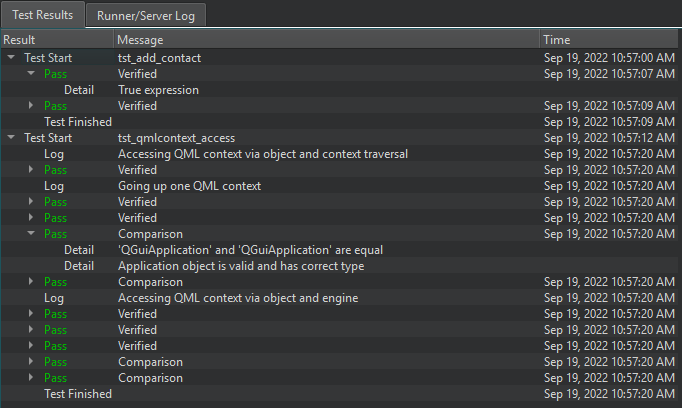
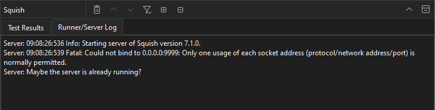

Squish
Squish uses compare, verify, and exception functions to record the results of tests applied to a running application under test (AUT) in the test log as passes or fails. In addition, any kind of test results can be recorded in the test log.
View Squish test log
To view the test log, go to the Squish output, Test Results tab.

The Result column displays the time when each test run started and finished, log information and warnings, and test result status:
- Pass - The test passed.
- Fail - The test failed.
- ExpectedFail - The test failed, as expected. For example, a known bug in the AUT caused a comparison or verification to fail.
- UnexpectedPass - The test passed unexpectedly. For example, a comparison or verification succeeded even though it was expected to fail.
The Message column displays log messages and information about the type of the operation that was performed: comparison, verification, or exception.
View Squish runner and server logs
To view the Squish Runner and Server logs, go to the Squish output, Runner/Server Log tab.

Squish view toolbar
Select options on the view toolbar to perform the following actions:
- To clear the view, select
 (Clear).
(Clear). - To move between test results or log entries, select
 (Next Item) and
(Next Item) and  (Previous Item).
(Previous Item). - To filter test results or log entries, select
 (Filter Tree).
(Filter Tree). - To expand or collapse the test results or log entries, select (Expand All) or (Collapse All).
See also Connect to Squish Server, Create Squish test suites, Enable and disable plugins, Manage Squish test suites and cases, Select Squish AUTs, and View output.